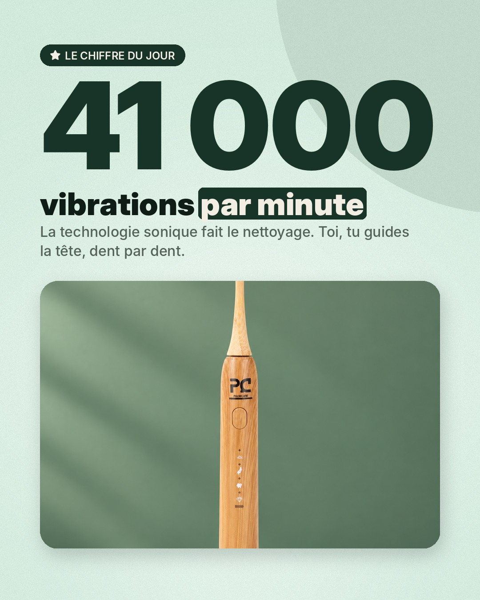

Légende
41 000 vibrations par minute : c'est ce que fait une brosse à dents électrique sonique Pulse Care pendant que tu guides. Concrètement, tu ne frottes plus. Tu poses la tête sur la dent, tu glisses lentement, et le mouvement fait le travail à ta place. C'est aussi pour ça qu'appuyer fort ne sert à rien. Lien en bio pour voir la gamme Pulse Care. #brosseadentselectrique #brosseadentsbambou #hygienebuccodentaire #pulsecare